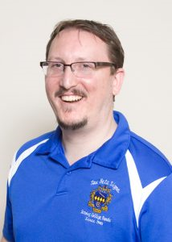
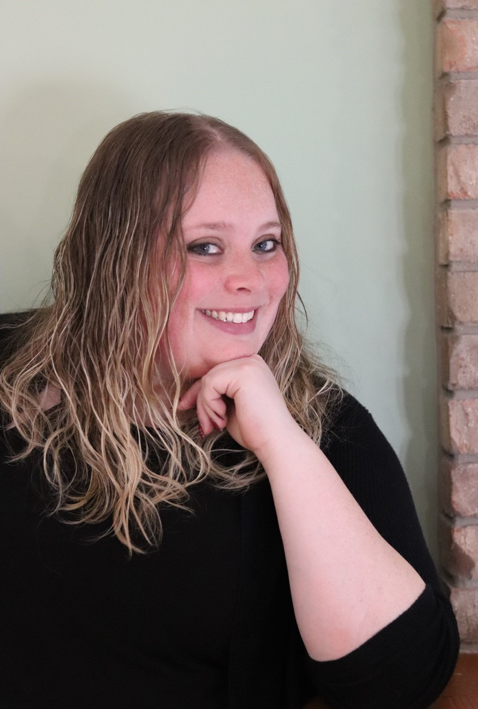
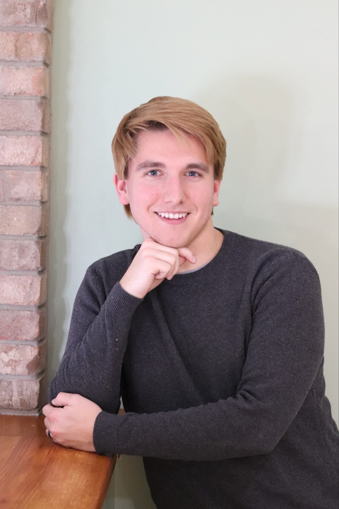
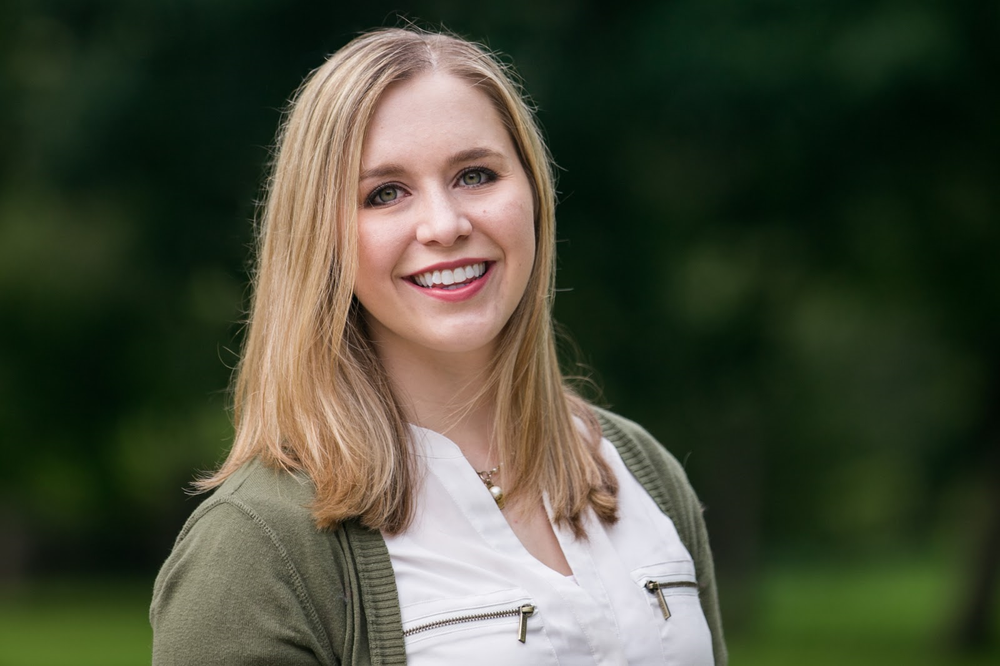
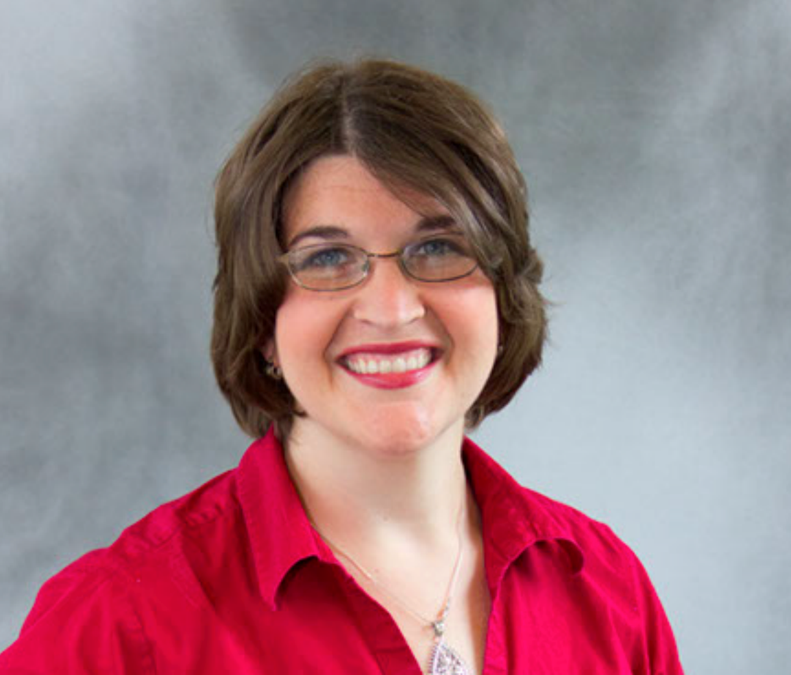
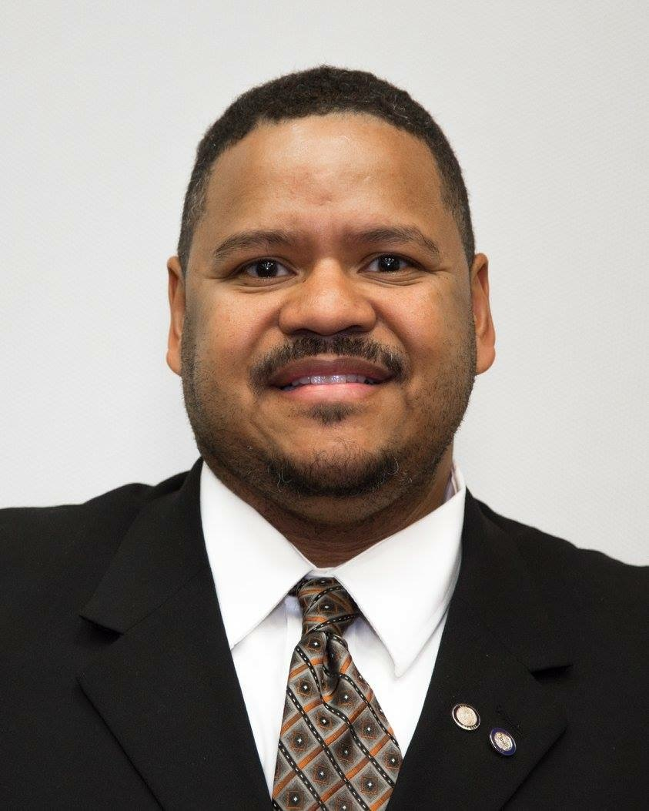
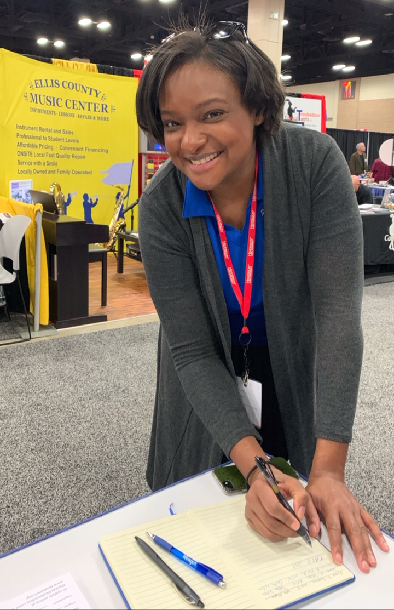
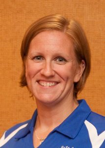
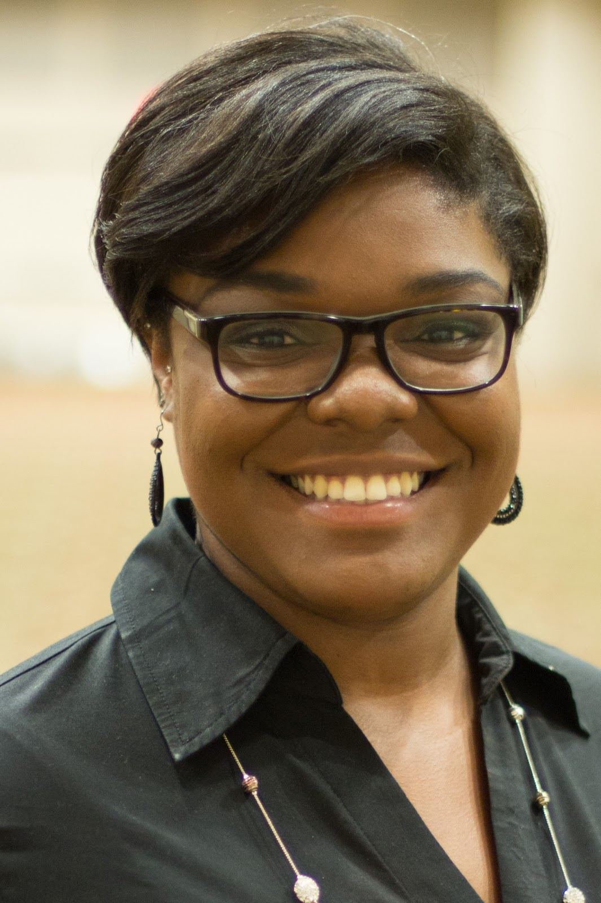

Speaker Bios
This page has information about the speakers who will be presenting the various workshops this weekend!
TBSADAA
Katie Langley
Trudy Adler
Derrick Mills
Jonathan Markowski, National President
Jonathan Markowski is a Life Member of the Delta Delta Chapter at the University of Massachusetts. Initiated in the fall of 1996, he spent 5 seasons in the color guard of the “Power and Class of New England,” the Minuteman Marching Band, under the direction of George Parks. He served his chapter as Parliamentarian, Alumni/Corresponding Secretary, Ritual Chair, and Chapter Delegate to District and National Conventions. He also served as Vice-President of the Northeast District, and was the National Vice President for Communication and Recognition during the 2011-2013 biennium.
Jonathan possesses Bachelor’s degrees in Psychology and Sociology from the University of Massachusetts, as well as a post-bacc degree in Education and a Master’s Degree in Management from Bridgewater State College. He is also an Honorary of the Eta Gamma Chapter at Boston University and a charter member of the TBSAA.
In addition to playing oboe in his local community band, Jonathan continues to serve band programs as a color guard instructor and clinician. He has worked with the Boston University Marching Band, the Abington High School Marching Band, and runs clinics with color guards in New Mexico, Connecticut, Pennsylvania and Massachusetts.
Jonathan will be hosting the "My Chapter Is So _______" workshop.
Back to TopTBSADAA
There are two speakers for TBSADAA this year.
Brittany DeRyke
Brittany DeRyke is a Life Member of the Alpha Delta Chapter at Ohio University, and was initiated in the March of 2008. At the chapter level, she served as VP of Membership, Corresponding Secretary, North Central District Committee Head, and Webmaster. At a district level, Brittany has served as an advisor for the Communications, Programs, and Sisterhood & Spirit Committees and a workshop presenter at NCD Convention in 2017. Brittany is the co-founder and President of Tau Beta Sigma Alpha Delta Alumni Association.
Brittany possesses a Bachelor’s degree in Hearing, Speech, and Language Sciences from Ohio University (2011), a post-graduate certificate from University of Cincinnati in Autism Spectrum Disorders (2012), and a Master of Art degree in Applied Behavior Analysis with an emphasis in Autism Spectrum Disorders (2014).
Brittany is currently a Behavior Consultant at an Applied Behavior Analysis Learning Center in the Greater Dayton Area. Brittany is very active in her community and participates in various Autism, cancer research, and music advocacy programs.
Kane Osstifin
Kane Osstifin is a Life Member of the Alpha Delta Chapter at Ohio University, and was initiated in the June 2012. At the chapter level, he served as VP of Membership and Alumni Liaison. At a district level, Kane participated in several Membership Committees as an active member and was a workshop presenter at NCD Convention in 2017. Kane is the co-founder and VP of Projects of Tau Beta Sigma Alpha Delta Alumni Association.
Kane possesses a Bachelor’s degree in Environmental Biology with a certificate in Environmental Studies from Ohio University (2015).
Kane is currently an Environmental Specialist for the City of Toledo. He’s currently active in public outreach and education involving storm water and handling environmental complaints.
Brittany and Kane are representing the TBSADAA and will be hosting "The Pursuit of Excellence" workshop.
Back to TopKatie Langley
Originally from Jonesboro, Arkansas, Katie Langley is Life Member of the Psi Chapter at the University of Arkansas as well as an Honorary Member of the Southwest District of Kappa Kappa Psi. Upon completing her Bachelor's Degree in Theater and Anthropology, she moved to Chicago to pursue a Masters in Social Science from the University of Chicago. She currently works as a Knowledge Manager in Ethics and Compliance for a large real estate company. She has served as a Chapter Visitation Assistant for the North Central District since 2017.
Katie will be hosting the "Growing Strong" workshop.
Back to TopTrudy Adler
Trudy R. Adler hails from Birmingham, Michigan and is a Life Member of Gamma Rho at Eastern Michigan University. Trudy has served in multiple roles on the District and National Level, including Chapter Sponsor for Lambda and North Central District Counselor. Trudy received her Bachelors of Social Work from Eastern Michigan University, her Masters of Social Work from the University of Michigan where she was a Geriatric Fellow and is currently seeking out her Masters of Public Administration in Healthcare Administration from Oakland University. Trudy currently serves as Social Worker for St. Joseph Mercy Hospice. In her spare time she enjoys working out, spending time with her daughter Rabeya and is in the process of learning French. Her primary instrument is trumpet and her secondary instruments are clarinet and voice.
Trudy will be hosting the "Do Less Better" workshop.
Back to TopDerrick Mills
Derrick Mills was initiated into the Eta Chapter of Kappa Kappa Psi at the Ohio State University in March of 1995, where he was a member of the Ohio State University Marching band from 1994 to 1998. Derrick graduated from Ohio State with a degree in Political Science in 1998. His current employment is with Hill International as a Project Manager.
He became a life member of the fraternity in July 1999. Derrick served Kappa Kappa Psi as its fifth National Chapter Field Representative from 2000-2002. Additionally, Derrick served as National Vice President for Student Affairs from 2003-2005, National Vice President for Programs from 2005-2007, and National Vice President for Colonization and Membership from 2007-2009. Derrick served as National President of Kappa Kappa Psi from 2009 – 2011. Derrick was the first past National Chapter Field Representative to serve as National President and serve on the National Council.
Derrick was initiated as an Honorary Member of both the Chi Chapter at Ohio State, and National Chapter of Tau Beta Sigma in 2001. At the 2011 National Convention in Colorado Springs, the National Chapter of Tau Beta Sigma presented Derrick with an Honorary Life Membership upon his retirement as Kappa Kappa Psi’s National President.
Derrick has been a Co-Sponsor of the Eta Chapter since 2012 and the Chi Chapter since 2014. At the 2017 National Convention in Orlando, Derrick was awarded the Tau Beta Sigma National Most Outstanding Sponsor Award.
Residing in Blacklick Ohio, Derrick continues his service to the Ohio State University band program as President of the TBDBITL Alumni Club Board of Directors. With over 5,000 alumni band members, it is one of the most successful and active alumni association at Ohio State.
Derrick will be hosting the "Your Chapter Sponsor" workshop.
Back to Topspeaker
speaker
speaker
speaker
speaker
speaker
speaker


speaker

bio
more words
information
descriptors
words
*name* will be hosting the *name of workshop* workshop.
Back to Topspeaker
bio
more words
information
descriptors
words
*name* will be hosting the *name of workshop* workshop.
Back to TopCarolyn McCambridge
René Mark
Jack Lee
Tammi Ramsey
Nicholas Bratcher
Erika Pope, National Vice-President for Special Projects
Erika Pope is a Life Member from the Theta Theta Chapter of Tau Beta Sigma from Henderson State University. Throughout the years she has served in various leadership roles both at the Chapter, District and National levels, most notably having served as the District Counselor for the Southwest District of Tau Beta Sigma from 2009-2015 and currently serving as Tau Beta Sigma’s National Vice President for Special Projects.
She is a Life Member of both Tau Beta Sigma (2007) and Kappa Kappa Psi 2016) and also holds Honorary Memberships in a variety of local chapters in both organizations. In her spare time she likes running, road trips, watching movies, reading novels and performing semi-professionally on the drums with her party band The Big Dam Horns. Erika currently lives in Memphis, TN and works for the Department of Music at Rhodes College as the Musical Arts Coordinator.
Erika will be hosting the "We Love You, You're Perfect...Now Change" workshop.
Back to TopCarolyn McCambridge
Carolyn McCambridge holds a Bachelor of Arts degree in Popular Culture from Bowling Green State University and a Master of Science degree in Leisure Services Management from Oklahoma State University. By trade Carolyn is a Certified Therapeutic Recreation Specialist and has worked in inpatient physical rehabilitation, inpatient and outpatient psychiatric, community, and chronic pain settings. She enjoys the clinical inpatient rehabilitation setting most. She has a particular interest in the stroke and spinal cord population with community reintegration and patient education as her specialities. Carolyn has experience with implementing new recreation therapy programs, creating and evaluating yearly program budgets, modality research, developing peer visitation networks, and facilitation of support and education groups.
A found love for Zumba led Carolyn to become a Licensed Zumba Instructor. She is licensed to teach Zumba and Zumba Toning but most enjoys helping the Zumba Gold population lead healthy and active lifestyles.
Carolyn brings all of her experience to the sorority often facilitating workshops focused on health, wellness, and mental health. She has even been known to lead Zumba classes at Sorority events.
Carolyn was initiated into the Alpha Xi chapter of Tau Beta Sigma and has had the great honor of being made an honorary of Kappa Kappa Psi. She held several offices within the chapter and district levels, served as the Chapter Field Representative for Tau Beta Sigma, held the position of Membership Services Coordinator at National Headquarters, and Counselor for the North Central District of Tau Beta Sigma.
Originally from Pittsburgh, PA, Carolyn is a self proclaimed foodie. She resides in Oswego, IL with her husband Scott (life member, Zeta Alpha, Tau Beta Sigma) and their two daughters Lucy and Norah. When she’s not chasing around her crazy kids, you can find Carolyn fueling her running and triathlon addiction.
Carolyn will be hosting the "Talk Less. Smile More." workshop.
Back to TopRené Mark
René Mark was initiated into the Beta Xi Chapter of Tau Beta Sigma at the University of Florida in 2008. During her time as an active member René served in many positions including Chapter President and Southeast District Vice President for Special Projects. Since graduating with a Bachelor of Science in Event Management in 2012, René has gone on to help found the Beta Xi Alumni Association and the Southeast District Alumni Association and served as the Beta Xi Chapter Sponsor for two years. Currently, René serves as the Communications Chair on the Tau Beta Sigma Alumni Association Executive Council and as a Board Member of the Gator Band Alumni Association. After graduating with her Master of Arts in Arts Presenting and Live Entertainment Management 2016, René moved to Los Angeles where works in concert and tour booking.
René will be hosting the "Perfecting Your Elevator Pitch" workshop.
Back to TopNicholas Bratcher
bio
more words
information
descriptors
words
Nicholas will be hosting the "Old Wine in New Bottles" workshop.
Back to Top